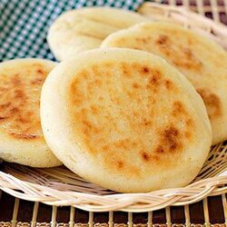

Arepa is a type of food made of ground maize dough, originating from the northern region of South America in pre-Columbian times, and is notable in the cuisines of Colombia and Venezuela. It is eaten daily in those countries and can be served with accompaniments such as cheese, cuajada (fresh cheese), various meats, chicken, avocado, or diablito (deviled ham spread or tuna, fish).
